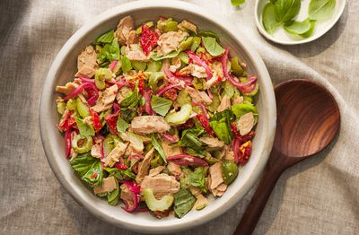

Tuna Salad
Ingredients
- 2 cans of tuna, drained
- 1/2 cup of mayonnaise
- 2 tablespoons of Dijon mustard
- 1/4 cup of chopped celery
- 1/4 cup of chopped red onion
- 1/4 teaspoon of black pepper
- Salt and pepper, to taste
Steps
- In a large mixing bowl, combine the tuna, mayonnaise, red onion, celery, parsley, Dijon mustard, and lemon juice.
- Mix the ingredients together until they are well combined.
- Taste the tuna salad and add salt and black pepper to adjust the seasoning to your liking.
- Serve the tuna salad chilled or at room temperature.